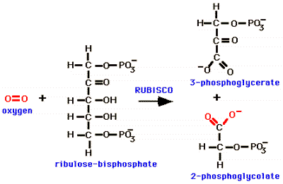
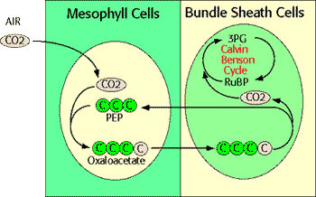

Photosynthesis Problem Set 2
Problem 9 Tutorial: C4 photosynthesis
Which statement about photosynthesis in C4 plants is NOT true?
A. |
the first product of carbon dioxide fixation is a compound with 4 carbon atoms. |
Oxygen, an inhibitor of photosynthesis, can occur at high levels in leaves. High levels of oxygen in chloroplasts can lead to photorespiration. In photorespiration, oxygen substitutes for CO2 as RUBISCO substrate, leading to the release of CO2 and the oxidation of RuBP as shown in the following equation: |
|

B. |
C4 photosynthesis is an adaptation for plants living in hot, arid climates. |
Some plants that live in hot, dry climates maintain low oxygen levels in their leaves by keeping the stomata closed to prevent water loss. To get adequate CO2 for photosynthesis, C4 plants have adapted to photorespiration by modifying the Calvin-Benson cycle. C4 plants have a special leaf anatomy, with prominent bundle sheath cells surrounding the leaf veins. Photorespiration is minimal in C4 plants compared to C3 plants, and CO2 is actively concentrated in these bundle sheath cells.
C. |
carbon dioxide is initially fixed in mesophyll cells, but the Calvin cycle is active in bundle sheath cells in leaves of C4 plants. |
C4 plants have evolved a special, energy-requiring pathway to create high, local concentrations of CO2 for the Calvin-Benson Cycle. C4 plants initially fix CO2 at low intracellular CO2 concentrations in mesophyll cells as 4-carbon compounds, using the energy from the hydrolysis of 1 ATP for each CO2 fixed. CO2 is then released in the bundle sheath cells where the Calvin-Benson Cycle reactions occur. The path of CO2 from air, to initial fixation in mesophyll cells, to release in bundle sheath cells and entry into the Calvin-Benson Cycle is shown in the following diagram:
D. |
more ATP is used overall for sugar biosynthesis in C4 than in C3 plants |
C4 photosynthesis is an adaptation for plants living in hot, arid climates like Tucson, Arizona. C4 plants initially fix CO2 in mesophyll cells as 4-carbon compounds, and later release CO2 in bundle sheath cells. There is an additional ATP requirement for each carbon dioxide utilized in this pathway.
E. |
photorespiration is minimal in C4 plants compared to C3 plants. |
High levels of oxygen at the site of the RUBISCO reaction are the cause of photorespiration. C4 plants largely bypass photorespiration by using an extension of the Calvin-Benson cycle to pump only CO2, and not oxygen, into the bundle sheath cells where the RUBISCO reaction occurs. C4 plants can maintain a high, local concentration of CO2 for RUBISCO activity without raising cellular oxygen levels.


University of Arizona
Friday, October 4, 1996
Contact the Development Team
http://www.biology.arizona.edu
All contents copyright © 1996. All rights reserved.